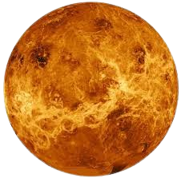

Welcome to Venus

VENUS is hotter than MERCURY. It contain over 1,600 active volcanoes, they named it VENUS after the roman goddess of love and beauty. Plus VENUS becomes the brightest object in the sky soon before or after sunsetVenus is the second planet from the Sun. Venus is a bit smaller than Earth. It's 7,521 miles (12,104 kilometers) across, and Earth is 7,926 miles (12,756 kilometers). On Venus, the Sun would rise in the west and set in the east, because Venus spins backward compared to Earth.
Venus' atmosphere is one of extremes. With the hottest surface in the solar system, apart from the Sun itself, Venus is hotter even than the innermost planet, charbroiled Mercury. The atmosphere is mostly carbon dioxide - the same gas driving the greenhouse effect on Venus and Earth with clouds composed of sulfuric acid. And at the surface, the hot, high-pressure carbon dioxide behaves in a corrosive fashion. But higher up in the atmosphere, temperatures and pressure begin to ease.
قال تعالى في سورة الصافات: (إِنَّا زَيَّنَّا السَّمَاءَ الدُّنْيَا بِزِينَةٍ الْكَوَاكِبِ)